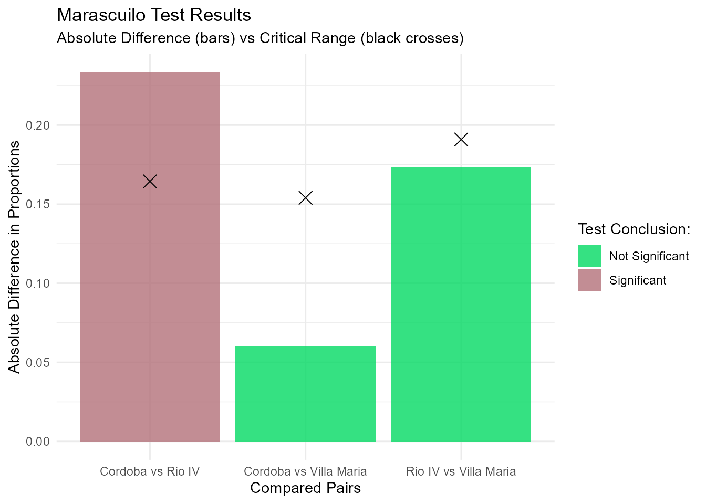

Tutorial: Marascuilo Procedure
tutorial-marascuilo.RmdIntroduction
The TFGproject package provides an easy-to-use
implementation of the Marascuilo procedure. This test is typically used
after a significant Chi-square test to determine exactly which groups
differ from each other when comparing multiple proportions.
Example Data
Let’s create a sample dataset representing a survey about a specific opinion across three different cities:
Running the Test
We use the marascuilo_test() function. We need to
specify the dataset, the grouping column, the response column, and the
specific value that represents a “success” (in this case, “De
acuerdo”).
resultados <- marascuilo_test(
df = df_ejemplo,
col_grupo = "Ciudad",
col_respuesta = "Opinion",
valor_exito = "De acuerdo"
)Results and Visualization
Because the package uses a custom S3 class architecture, you can simply print the object to see the results and which comparisons are statistically significant:
resultados
#>
#> --- Marascuilo Procedure Results ---
#>
#> Pair Absolute_Diff Critical_Range Significance
#> Cordoba...1 Cordoba vs Rio IV 0.2333 0.1644 Significant
#> Cordoba...2 Cordoba vs Villa Maria 0.0600 0.1540 Not Significant
#> Rio IV Rio IV vs Villa Maria 0.1733 0.1909 Not Significant
#>
#> ------------------------------------To visually interpret these results, use the autoplot()
function. It will automatically generate a ggplot2 chart
comparing the absolute differences against the critical ranges for each
pair:
autoplot(resultados)
Sample Data and Shiny Application
The package includes a built-in CSV sample dataset. You can access
its path and load it using system.file():
ruta_csv <- system.file("extdata", "datos_ejemplo.csv", package = "TFGproject")
datos_csv <- read.csv(ruta_csv)
head(datos_csv)
#> Ciudad Opinion
#> 1 Cordoba De acuerdo
#> 2 Cordoba De acuerdo
#> 3 Cordoba De acuerdo
#> 4 Cordoba De acuerdo
#> 5 Cordoba De acuerdo
#> 6 Cordoba De acuerdoTo launch the interactive Shiny web application included in the package, run the following command in your R console:
shiny::runApp(system.file("app", package = "TFGproject"))